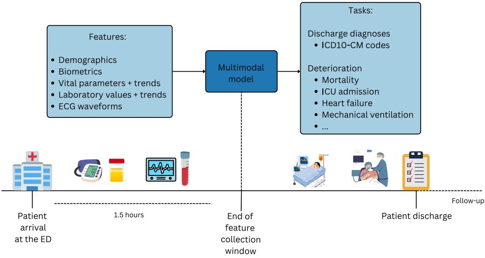
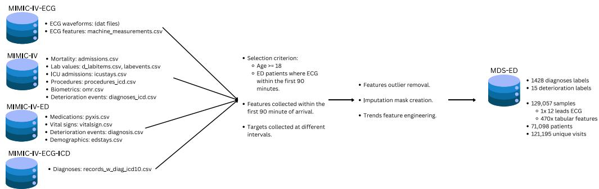

- MDS-ED = 急诊多模态（ECG + 表格）→ 1428 个 ICD 标签的公开 benchmark，论文给出骨架与基线宏 AUROC 0.834。
- 后续所有改进（换头 / 层级惩罚 / 链式训练）都是在这个骨架上的增量——只在 head 与 loss 层动手，主干不变。
Takeaway 🎯 MDS-ED = 急诊多模态（ECG + 表格）→ 1428 个 ICD 标签的公开 benchmark，立框架、给基线。
论文：Enhancing Clinical Decision Support with Physiological Waveforms — A Multimodal Benchmark in Emergency Care（Lopez Alcaraz, Bouma, Strodthoff, Univ. Oldenburg）——提出 MDS-ED 基准：急诊场景多模态 ICD 诊断编码（1428 个 ICD-10-CM）+患者恶化（15 指标）预测；模态=12 导联 ECG@100Hz（S4 编码）+470 维表格特征（3 层 MLP）+临床文本（本实验配置未启用）；129,057 样本/71,098 患者（MIMIC-IV-ED）；论文声称多模态 macro-AUROC 0.8334 [0.8300, 0.8366]。
Takeaway 🎯 骨架 = S4 时序编码器 + MLP 静态编码器 + Concat 融合 + 线性预测头——后续所有改进只动 head 与 loss。
12-lead ECG
S4 × 4 layers
state_dim=8
dim=512
Cat(3×Emb16)
+ Cont(470)
MLP × 3 layers
[128,128,128]
Concat
Multi-modal
Features
Multi-Label
Sigmoid
1428 ICD codes
三模态输入 → 独立编码器 → 拼接融合特征 → 多标签Sigmoid分类

Fig. 1 — MDS-ED 临床工作流Pipeline (来源: 论文)
Fig. 2 — 数据集创建流程 (来源: 论文)损失函数： Binary Cross-Entropy (多标签)
评估指标： Macro-AUROC + Bootstrap 95% CI (N=1000)
数据划分： 18:1:1 (Train:Val:Test), stratified by gender, age bins, discharge diagnoses
预处理： Median imputation + binary mask columns for imputed values; 2.5s ECG window (input_size=250 @ 100Hz)
论文图表： Fig.1 (Pipeline), Fig.2 (Dataset creation), Table 2 (AUROC per model), Table 3 (Per-ICD chapter AUROC)
Takeaway 🎯 多模态 > 单模态——ECG 与表格的融合在论文基准上带来最优宏 AUROC。
| 模型 | Diagnoses macro-AUROC | Deterioration macro-AUROC |
|---|---|---|
| Clinical routine data (XGBoost) | 0.7551 (0.7537–0.7562) | 0.8443 (0.8257–0.8624) |
| ECG features only (XGBoost) | 0.6366 (0.6352–0.6374) | 0.7463 (0.7192–0.7666) |
| ECG waveforms only (S4) | 0.7756 (0.7714–0.7796) | 0.8643 (0.8488–0.8785) |
| ECG features + Clinical (XGBoost) | 0.7763 (0.7754–0.7783) | 0.8734 (0.8576–0.8908) |
| ECG waveforms + Clinical (S4+MLP) | 0.8334 (0.8300–0.8366) | 0.9193 (0.9069–0.9300) |
introduce_nan_columns 对AUROC的显著影响问题描述： MDS-ED数据集中某些tabular列存在于训练集但完全缺失于验证/测试集（如某些实验室检验项目仅对特定病人群体做）。
introduce_nan_columns=True
时显式引入NaN列让模型感知缺失模式 → 训练更鲁棒。
| 配置 | introduce_nan_columns | input_channels_cont | 验证集 macro-AUROC (agg0) | 测试集 macro-AUROC (agg1) | Δ val | Δ test |
|---|---|---|---|---|---|---|
| Baseline (原始) | False | 463 | 0.8187 | 0.8270 | — | — |
| Baseline w/ NaN Mask | True | 926 | 0.8264 | 0.8356 | +0.0077 | +0.0086 |
introduce_nan_columns=False
下运行，需要在 True 下重新运行以获得公平对比。（对比时应使用 0.8264 而非 0.8187
作为baseline）
Takeaway 🎯 显式引入 NaN 指示列显著提升 AUROC——「哪里缺失」本身就是强特征（后续 M20 三源复现 +0.86pp）。
Takeaway 🎯 129,057 样本 / 1428 标签 / baseline 宏 AUROC 0.834——这是全项目所有实验的对照原点。
| 参数 | 数值 |
|---|---|
| 数据集 | MIMIC-IV-ED |
| ICD编码数 | 1428 |
| 父子标签对数 | 978 |
| Test样本数 | 25,756 |
| ECG导联 | 12 (input_channels=12) |
| 采样率 | 100 Hz (input_size=250 = 2.5s) |
| Batch Size / Epochs | 64 / 20 |
| Tabular 分类特征 | 3 (vocab_sizes: [2,5,5]) |
| Tabular 连续特征 | 463 (False) / 926 (True) |
| 标签预处理 | 前缀闭包（prefix closure）：child=1 ⇒ parent≡1 |
| 真实标签父子违反 | 0 / 978 对（129,057 样本 × 1,454,036 次 child=1 事件，全量验证） |
Takeaway 🎯 核心公式汇总：BCE 主项 + 层级约束 + 链式法则——MDS-ED 及其三个改进方向的数学基础。